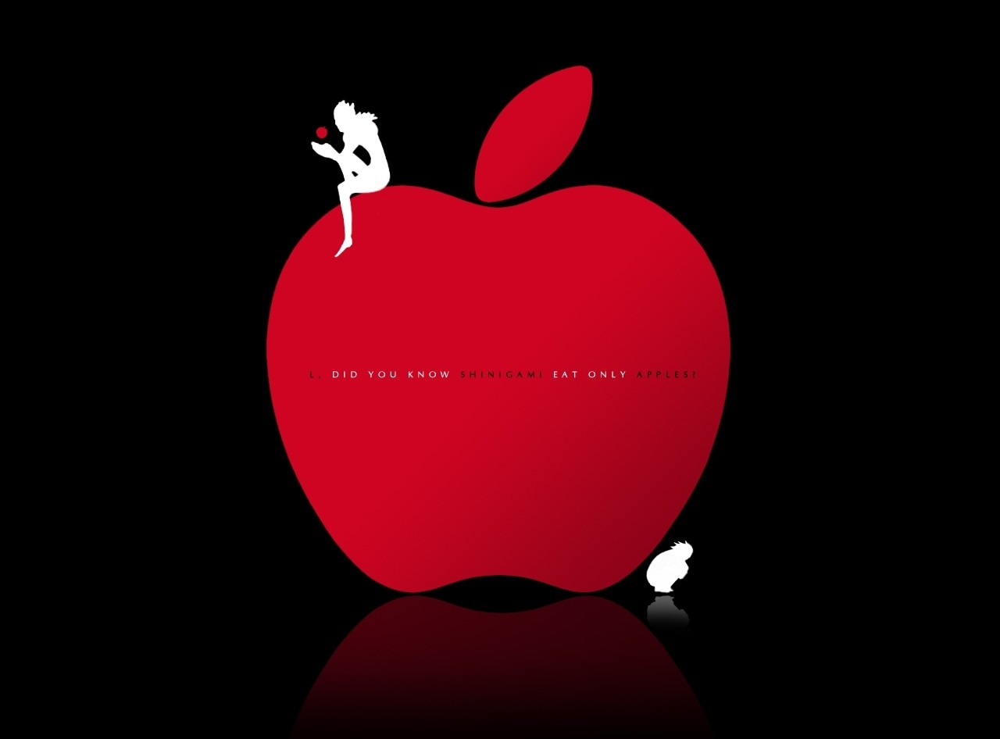

home
Home
accessibility
About Me
directions_run
Hobbies
phone
Contact
MY HOBBIES
I just like to listen to music a lot. I like pop songs a lot especially those of Shawn Mendes,The Chainsmokers.

I am an avid anime watcher. Genre such as Psychology , Suspense and Thriller intrigues me the most.
I like to read novels especially that of Agatha Christie. Now-a-days I am reading mangas which don't fail to awe me.
I like to solve logical and mental puzzles in my free times.Earlier , I used to solve cryptic and sudoku puzzles also.